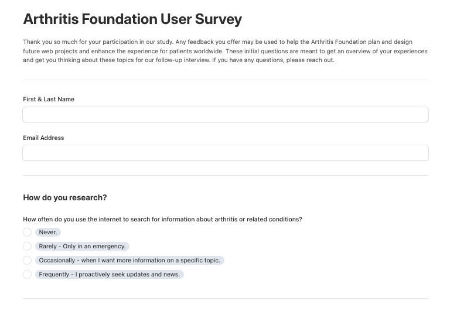
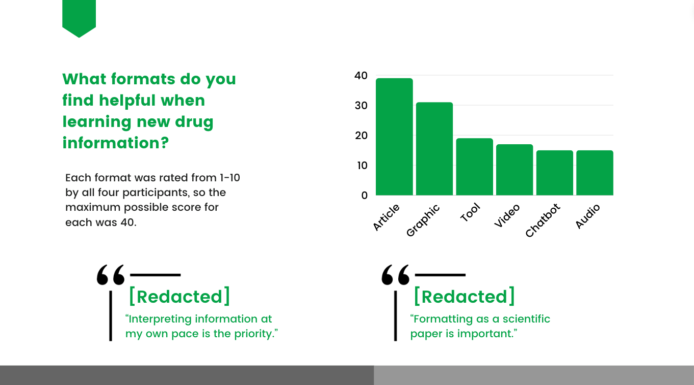
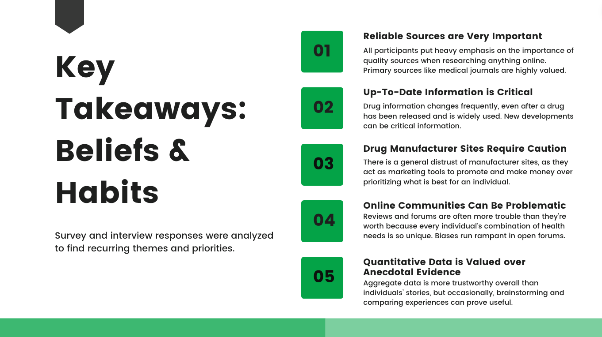
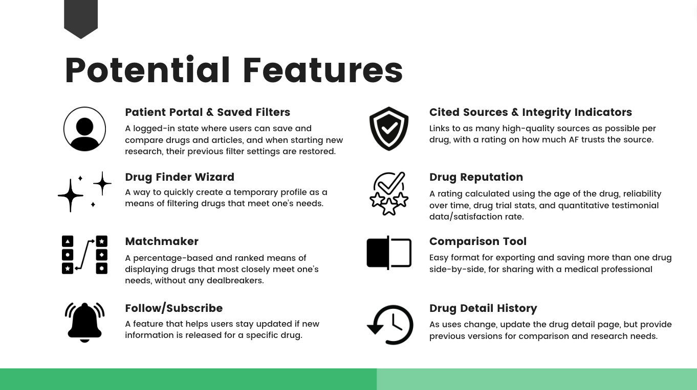
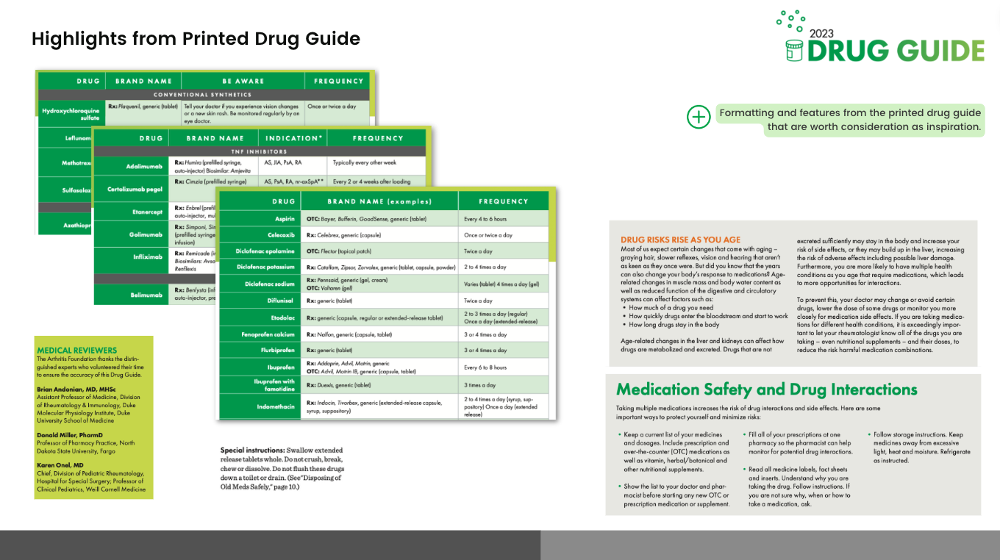
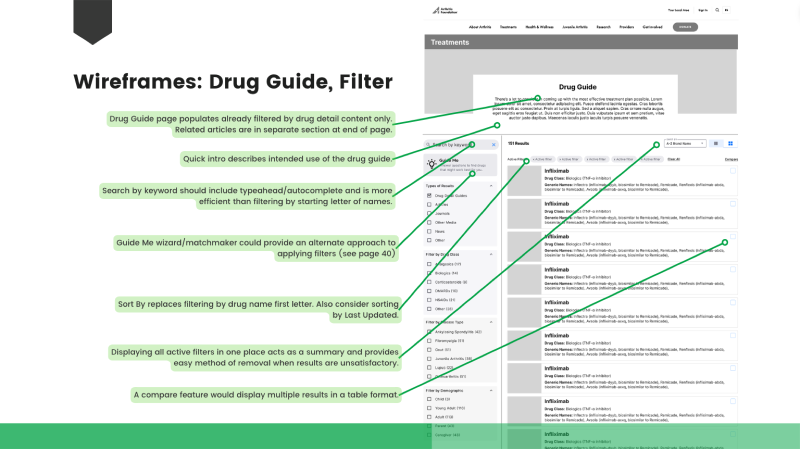

04 / Case Study — UX Research
Drug Guide
Two-phase research — surveys, then video interviews — that put real patient voices at the center of an interactive drug guide for Arthritis.org.
01 — Overview
The Arthritis Foundation wanted to build an interactive drug guide for Arthritis.org — and, importantly, wanted patient feedback baked into the design from the start.
I designed and ran the research end to end, then turned it into design recommendations the team could act on with confidence.

02 — The Challenge
Understand patients before designing for them
People managing chronic conditions make real decisions about their medications, often under stress. Getting a drug guide right means understanding how they actually research their drugs — their habits, their language, their anxieties — before a single screen is designed.
The challenge was to gather that understanding rigorously, and to make participants comfortable enough to share it honestly.
03 — Approach
A two-phase method that warms people up
The structure was the insight: give people a chance to reflect before they talk, and the conversation gets far richer.
- 1Designed two phases. First a self-paced survey with quantitative questions about drug-research habits, then individual video interviews for qualitative depth.
- 2Sequenced it on purpose. The survey “warms up” participants’ minds, so the live interviews are easier, more comfortable, and more revealing.
- 3Ran interviews with context in view. Over Zoom, using Airtable’s Form, Grid, and Row Detail views to see each participant’s survey answers inline and build on them in real time.
- 4Synthesized into direction. Analyzed through information visualization, plus competitive analysis and an accessibility review, then translated it into wireframe proposals.

04 — The Outcome
Evidence, packaged to build from
I delivered a stakeholder presentation that carried the whole story: interview analytics, competitive annotations, a heuristic evaluation, the key takeaways, and wireframe proposals grounded in what patients actually said. Instead of guessing at a sensitive healthcare feature, the team got a clear, evidence-based starting point.
The key finding: the two-phase structure let participants reflect before they spoke — producing far richer qualitative insight than interviews alone, without losing the quantitative signal.





05 — Impact
Richer insight, ready to design
A method built for honesty, and a package built to hand off — so a high-stakes healthcare feature could move forward on evidence instead of assumptions.
0
Methods combined — quantitative + qualitative
0
In-depth patient interviews
0
Proposed features designed
06 — Reflection
Good research isn’t about collecting data — it’s about making a decision easier for the people who have to build the thing. The win here wasn’t a deck; it was a team that could move forward on evidence instead of assumptions.